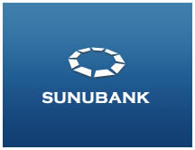

|  |
|
|
|
|
APPEL Rejoignez nous et faites l’Histoire
Nous sommes des senegalais de la diaspora (commercants, employes, restaurateurs, enseignants, ouvriers, chercheurs
banquiers, expert comptables, artisans, ingenieurs) vivant a l’exterieur du Senegal et voulons nous reunir
et mettre ensemble nos competences et volontes pour la creation d’un Credit Union
|
|
|
|
|
| |
|
|
|
|
FAQs
1. Pourquoi un Credit Union?
2. Quels sont les services et les produits de ce Credit Union qui seront
disponibles pour les participants?
3. Je vis et travaille aux USA, mais je n’ai pas de « papier ».
Je n’ai pas de « credit history». Puis je etre membre du credit Union et beneficier des produits et services?
4. Si je deviens membre du Credit Union, puis je me retirer quand
je veux sans dommage?
5. Combien me coutera la participation?
6. Je suis aux USA, mais dans quelques annees (meme dans quelques mois)
je veux soit rentrer au Sénégal ou aller dans un autre pays. Puis je rester membre du Credit Union?
7. Je suis deja client de la BHS pourquoi dois je prendre le risque de devenir
membre d’un Credit Union de Senegalais?
8. Je suis deje client d’une grande banque americaine pourquoi dois je prendre
le risque de devenir membre d’un Credit Union de Senegalais?
9. Quels sont les organes de controles internes et externes?
10. Pourquoi etre membre de Sununet pour participer à ce Credit Union ? Je suis
membre d’une autre organisation, ai-je la possibilite d’etre membre de ce Credit Union?
11. J’ai une idee pour le credit Union. Comment puis–je la soumettre?
12. Je veux faire partie du Conseil d’Administration du Credit Union.
Que dois-je faire?
13. Quels sont les personnes qui dirigent ce projet de Credit Union ? Puis je apporter
mes competences?
Q1: Pourquoi un Credit Union?
On estime qu’il y a plus de 2 millions de Senegalais qui vivent a l’exterieur du Senegal. Ces senegalais de l’exterieur
sont plus ou moins concentres dans les pays europeens, africains, et americains. Nous constituerons une force economique
et financiere si nous arrivons a nous organiser, a mobiliser, a canaliser, a orienter nos finances pour nos propres besoins
et ceux du Senegal. Ce Credit Union s'inscrit au coeur de la mission que Re-source/Sununet s'est assignee. Ce Credit Union a
pour objectif de mutualiser nos ressources pour satisfaire nos besoins financiers. Il sera atabli sous la loi et les
regles americaines.
Le Credit Union est une banque qui regroupe des gens sur des bases associatives (par exemple Credit
Union de musulmans, Credit Union d’artisans, Credit union de medecins), etc. Les clients sont en meme temps
des actionnaires de cette banque.
Haut de page
Q2: Quels sont les services et les produits de ce Credit Union qui seront
disponibles pour les participants?
En participant a ce Credit Union vous serez membre et donc actionnaire. Vous pourrez y
effectuer toutes les operations bancaires. Vous pourrez aussi beneficier de differents credits si vous
remplissez les conditions. Ces types de credits seront definis en fonction de nos moyens. Nous
prevoyons de developper des credits à la consommation, pour achat de voiture, pour
l’investissement, et a moyen terme credit pour achat de maison au Senegal voire dans votre pays de
residence.
Haut de page
Q3: Je vis et travaille aux USA, mais je n’ai pas de « papier ».
Je n’ai pas de « credit history». Puis-je etre membre du credit Union et beneficier des produits et services?
Oui vous pourrez etre membre du Credit Union et effectuer toutes les operations bancaires. Pour les credits,
il va falloir qu’une association partenaire avec laquelle nous travaillons vous cautionne pour pouvoir beneficier
de ces credits. De meme, vous devrez acceptez et signez un papier comme quoi, si vous ne remboursez pas vos emprunts
nous pourrons divulguer votre identite par Internet et par tout moyen a l’opinion publique au Senegal et
dans le monde.
Haut de page
Q4: Si je deviens membre du Credit Union, puis je me retirer quand
je veux sans dommage?
Oui, bien sur, vous allez juste payer les frais de fermeture de compte.
Haut de page
Q5: Combien me coutera la participation?
Vous pourrez apporter ce que vous voulez, ce que vous pouvez. Simplement, il y aura a payer un
droit d’entree (ouverture de compte) et la cotisation à verser à Sununet (car il faut etre membre de
cette association) pour pouvoir etre membre du Credit Union. Mais, plus vous aurez de l’argent dans
le credit Union, plus vous aurez de droits de vote donc de chance de participer au Conseil d’administration.
Haut de page
Q6: Je suis aux USA, mais dans quelques annees (meme dans quelques mois)
je veux soit rentrer au Senegal ou aller dans un autre pays. Puis je rester membre du Credit Union?
Vous avez le choix, fermez votre compte ou rester membre et laisser travailler votre argent dans
le Credit Union. Vous pourrez au besoin soit donner delegation pour votre droit de vote ou venir
participer aux assemblees generales du Credit Union
Haut de page
Q7: Je suis deja client de la BHS pourquoi dois je prendre le risque de devenir
membre d’un Credit Union de Senegalais?
Vous avez bien dit que vous etes client de la BHS, a ce Credit Union vous serez client et
proprietaire puisque vous serez actionnaire. D’autre part, vous n’avez pas la possibilite de faire des
operations bancaires a la BHS, autres que du transfert d’argent. En plus, la BHS vous prete au taux
du Senegal pour la construction de votre maison. Par exemple quand le taux est de 7% aux USA et
17% au Senegal, avec la BHS vous allez payez 17% d’interet. Ce Credit Union opere sous la
legislation americaine et est obligee de respecter les lois et les reglements americains. En plus, le staff
de ce Credit Union sera compose de banquiers confirmes qui ont deja fait leur preuve dans les plus
grandes banques americaines et du monde.
Haut de page
Q8: Je suis deja client d’une grande banque americaine pourquoi dois je prendre
le risque de devenir membre d’un Credit Union de Senegalais?
D'abord comme vous le savez, dans toutes les banques il y a des risques. D’ailleurs, ce sont les
plus grandes banques americaines qu’il y a eu des faillites. Donc il y a toujours des risques en matiere
de banque, seulement il faut se premunir des risques avec les plus serieuses precautions que la loi et
les reglements envisagent. Etre membre du Credit Union Senegalais aux USA c’est aussi d’une
certaine facon etre membre dune banque americaine. En meme temps c’est lier l’utile à l’agreable : un
investissement rentable et un engagement patriotique.
Haut de page
Q9: Quels sont les organes de controles internes et externes?
En dehors des organes de controle de l’Etat Federal Americain, il est prevu d’autres organes de
controle : le Board of Directors, Advisory Board, l’Assemblee Generale voire un Conseil de
Surveillance. Nous allons proposer les modes et voies d’election et de designation de ces membres.
Mais, de façon generale, elle se fera sur les bases suivantes : engagements dans la creation et
representativite (nombre de signatures levees), competence technique (financieres), depots d’argent,
et motivation individuelle et communautaire (a savoir l’engagement pour servir les autres et surtout
pour l’unite des senegalais dans cette entreprise).
Haut de page
Q10: Pourquoi etre membre de Sununet pour participer a ce Credit Union ? Je suis
Pour creer un Credit Union, il faudra que ca se fasse sur une base associative. Il se trouve que
Sununet depuis tres longtemps avait ce projet et en plus c’est une organisation qui permettra non
seulement au Senegalais vivant aux USA, mais aussi tous les autres Senegal si vivant dans d’autres
pays de pouvoir y participer. Sununet est la plus large structure associative qui peut donc inclure tous
les senegalais. Appartenir a Sununet n’exclut pas d’appartenir une autre structure. Donc vous pourrez
toujours restez dans votre organisation et etre membre du Credit Union en prenant aussi une
adhesion à Sununet.
Haut de page
Q11: J’ai une idee pour le credit Union. Comment puis – je la soumettre?
Verifiez d’abord que votre idee n’est pas dejà exploitee dans les documents. Ensuite, si elle ne l’est
pas, n’hesitez pas à l’envoyer à sunucreditunion@gmail.com
Haut de page
Q12: Je veux faire partie du Conseil d’Administration du Credit Union.
Que dois-je faire?
Patientez un peu, nous ferons parvenir à tous les informations sur les procedures pour etre
membre du Conseil d’Administration du Credit Union. En fait, nous sommes a la phase I du projet
qui est le pre-approval. Des que ce sera obtenu, on ira à la phase 2 qui est le Business plan et les
modes de designations des membres de differents organes.
Haut de page
Q13: Quels sont les personnes qui dirigent ce projet de Credit Union ? Puis je apporter
mes competences?
A la phase actuelle de notre projet, nous avons mis en place un comite de pilotage. Il y a deux poles :
un pole technique (des financiers, banquiers, experts comptables, enseignants, avocats et
informaticiens de tres haut niveau, ayant parfois exerce de tres hautes fonctions dans les grandes
banques europeennes et americaines.) et un pole marketing avec des representant d’associations
senegalaises, des communautes immigrees senegalaises aux USA et en Europe. Le comite est une
structure flexible, il y a un bureau provisoire (president, secretaire general, des conseillers, et des
portes paroles). Quel que soit votre lieu de residence, vous pourrez devenir porte-parole ou
conseiller ou meme expert, selon les besoins bien ser. Vous pourrez aussi apporter votre
contribution intellectuelle, sociale, culturelle. Il faut juste vous signaler au comite de pilotage.
sunucreditunion@gmail.com
Haut de page
|
|
|